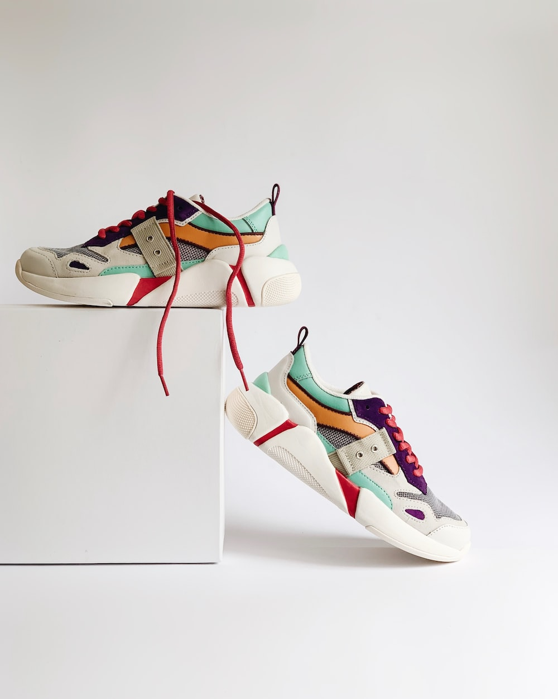

Detail Product

Onitsuka Dog
Rp. 899.000
Crafted from premium materials, these shoes offer exceptional durability and long-lasting wear. The unique design features a sleek, low profile silhouette with a breathable mesh upper for maximum ventilation and comfort. The padded collar and tongue provide a snug, secure fit, while the OrthoLite sockliner delivers superior cushioning for all-day comfort. The rubber outsole is designed for maximum grip, ensuring you stay stable on any surface. Whether you're running errands, hitting the gym, or simply hanging out with friends, the Onitsuka Dog shoe is the perfect choice for style and comfort.
Specification
- Upper Material: Made from breathable mesh and synthetic overlays for support and durability.
- Midsole: Features an OrthoLite sockliner for enhanced cushioning and moisture management.
- Outsole: Rubber outsole provides durable traction and grip on a variety of surfaces.
- Closure: Traditional lace-up closure with flat cotton laces.
- Design: Low profile design with a padded collar and tongue for added comfort and support.
- Branding: Onitsuka Tiger logo on the side and tongue.
- Ideal for: Casual wear, running, and training.